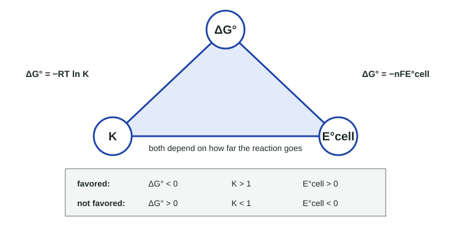

Cell Potential and Free Energy
Standard reduction potentials rank how readily species gain electrons.
Part 1 · Hook
Why this matters
Part 2 · Before you start
What this builds on
Part 3 · Prerequisite check
Quick check before you start
1. In a galvanic cell, where does reduction happen?
- At the cathode
- At the anode
- In the salt bridge
- In the wire
Show the answer
Reduction at the cathode, oxidation at the anode.
- Correct: At the cathode:
- At the anode:
- In the salt bridge:
- In the wire:
2. If ΔG° < 0, what is true of K?
- K > 1
- K < 1
- K = 1
- K = 0
Show the answer
ΔG° = −RT ln K: negative ΔG° gives K > 1.
- Correct: K > 1:
- K < 1:
- K = 1:
- K = 0:
Part 4 · See it
See it first

Part 5 · Step by step
How it works, step by step
- Each half-reaction has a tendency to gain electrons, measured by its standard reduction potential E°the half-reaction with the more positive E° is reduced at the cathode
- The other half-reaction runs in reverse as the oxidation at the anodeE°cell = E°(cathode) − E°(anode), positive for a galvanic cell
- E° is energy per unit charge, an intensive propertybalancing electrons never multiplies an E°
- Total electrical work is charge × voltageΔG° = −nFE°, so a positive E°cell means ΔG° < 0 and K > 1
Part 6 · Key ideas
Key ideas
- A standard reduction potential E° measures how readily a species gains electrons. More positive: stronger oxidizing agent.
- E°cell = E°(cathode) − E°(anode), using both values as reduction potentials. Positive E°cell: favored (galvanic).
- E° is intensive: never multiply it by a coefficient when you balance electrons.
- ΔG° = −nFE°, with n the mol e⁻ transferred in the balanced equation and F = 96,485 C/mol e⁻ (1 J = 1 C·V).
- E° > 0 ⇔ ΔG° < 0 ⇔ K > 1. A negative E°cell means the reaction needs an electrolytic cell.
Part 7 · Misconception
A common mistake
The wrong idea: When a half-reaction is multiplied by 2 to balance electrons, its E° is multiplied by 2 too.
What actually happens: E° is energy per coulomb, an intensive property, like temperature. Multiplying a half-reaction changes the number of electrons (n), which changes ΔG° = −nFE°, but E° stays the same.
Part 8 · Check yourself
Check yourself
Exam-style questions. Anything you miss goes into your review queue.
Data table
Standard reduction potentials
Standard reduction potentials at 25 °C. F = 96,485 C/mol e⁻.
| Half-reaction | E° (V) |
|---|---|
| Ag⁺(aq) + e⁻ → Ag(s) | +0.80 |
| Cu²⁺(aq) + 2e⁻ → Cu(s) | +0.34 |
| Pb²⁺(aq) + 2e⁻ → Pb(s) | −0.13 |
| Ni²⁺(aq) + 2e⁻ → Ni(s) | −0.25 |
| Fe²⁺(aq) + 2e⁻ → Fe(s) | −0.44 |
| Zn²⁺(aq) + 2e⁻ → Zn(s) | −0.76 |
| Al³⁺(aq) + 3e⁻ → Al(s) | −1.66 |
| Mg²⁺(aq) + 2e⁻ → Mg(s) | −2.37 |
1. A galvanic cell is built from a Ni/Ni²⁺ half-cell and an Ag/Ag⁺ half-cell under standard conditions. Calculate E°cell.
Type a number and its unit.
Show the answer
Silver has the more positive E°, so Ag⁺ is reduced (cathode) and Ni is oxidized (anode). E°cell = E°(cathode) − E°(anode) = 0.80 V − (−0.25 V) = 1.05 V.
- Answer: 1.05 V
2. Which is the balanced overall reaction for the Ni/Ag galvanic cell?
- Ni²⁺(aq) + 2 Ag(s) → Ni(s) + 2 Ag⁺(aq)
- Ni(s) + 2 Ag⁺(aq) → Ni²⁺(aq) + 2 Ag(s)
- Ni(s) + Ag⁺(aq) → Ni²⁺(aq) + Ag(s)
- Ni(s) + 2 Ag(s) → Ni²⁺(aq) + 2 Ag⁺(aq)
Show the answer
Oxidation Ni → Ni²⁺ + 2e⁻; reduction 2 Ag⁺ + 2e⁻ → 2 Ag; overall Ni + 2 Ag⁺ → Ni²⁺ + 2 Ag.
- Ni²⁺(aq) + 2 Ag(s) → Ni(s) + 2 Ag⁺(aq): This is the reverse, with E° = −1.05 V: not favored, so it is not what the galvanic cell runs.
- Correct: Ni(s) + 2 Ag⁺(aq) → Ni²⁺(aq) + 2 Ag(s): Right: nickel is oxidized, silver ions are reduced, and two Ag⁺ take the two electrons from each Ni.
- Ni(s) + Ag⁺(aq) → Ni²⁺(aq) + Ag(s): Atoms balance but charge does not (+1 vs +2). Two electrons need two Ag⁺.
- Ni(s) + 2 Ag(s) → Ni²⁺(aq) + 2 Ag⁺(aq): Both metals are oxidized here; a redox reaction needs one species reduced.
3. Calculate ΔG° for the reaction in the Ni/Ag cell, Ni(s) + 2 Ag⁺(aq) → Ni²⁺(aq) + 2 Ag(s).
Type a number and its unit.
Show the answer
ΔG° = −nFE° = −(2 mol e⁻)(96,485 C/mol e⁻)(1.05 V) = −2.026 × 10⁵ J/mol = −203 kJ/mol (1 J = 1 C·V).
- Answer: -203 kJ/mol
Model
An aluminum-copper cell
A galvanic cell is built under standard conditions from an Al strip in 1.0 M Al(NO₃)₃ and a Cu strip in 1.0 M Cu(NO₃)₂. Standard reduction potentials: Al³⁺(aq) + 3e⁻ → Al(s), E° = −1.66 V; Cu²⁺(aq) + 2e⁻ → Cu(s), E° = +0.34 V. F = 96,485 C/mol e⁻.
4. Calculate E°cell for the cell.
Type a number and its unit.
Show the answer
Cu²⁺ has the more positive E°, so it is reduced; Al is oxidized. E°cell = 0.34 V − (−1.66 V) = 2.00 V. The coefficients 2 and 3 used to balance electrons do not change any E°.
- Answer: 2.00 V
5. How many moles of electrons, n, are transferred in the balanced equation 2 Al(s) + 3 Cu²⁺(aq) → 2 Al³⁺(aq) + 3 Cu(s)?
- 3
- 2
- 6
- 5
Show the answer
n is the least common multiple of the electrons in the two half-reactions: 2 × 3 = 6.
- 3: That is the electrons for one Al atom. The equation has two Al atoms.
- 2: That is the electrons for one Cu²⁺ ion. The equation has three of them.
- Correct: 6: Right: 2 Al each lose 3 electrons and 3 Cu²⁺ each gain 2: six electrons.
- 5: Adding 3 and 2 does not count electrons. Multiply electrons per atom by atoms: 2 × 3 = 3 × 2 = 6.
6. A student writes E°cell = 3(+0.34) − 2(−1.66) = 4.34 V "because the equation has 3 Cu²⁺ and 2 Al." Which correction is best?
- The coefficients should be divided, not multiplied, giving 0.34/3 + 1.66/2.
- The student is right; the coefficients belong in E° and in n as well.
- E° is intensive, like temperature, so coefficients never change it: E°cell = 2.00 V.
- The anode’s E° alone should be multiplied, because electrons are released there.
Show the answer
E° is energy per coulomb. Balancing electrons changes the total energy (through n in ΔG° = −nFE°) but not the energy per coulomb.
- The coefficients should be divided, not multiplied, giving 0.34/3 + 1.66/2.: Coefficients do not enter E° at all, whether multiplied or divided.
- The student is right; the coefficients belong in E° and in n as well.: The coefficients affect n (and so ΔG°), but never E°.
- Correct: E° is intensive, like temperature, so coefficients never change it: E°cell = 2.00 V.: Right: potential is energy per unit charge; doubling the reaction doubles both, leaving E° unchanged.
- The anode’s E° alone should be multiplied, because electrons are released there.: Neither E° is multiplied.
7. For Cu(s) + Zn²⁺(aq) → Cu²⁺(aq) + Zn(s), E° = −1.10 V. What does this tell you?
- The reaction is favored but slow, so it needs a catalyst.
- The cell will run with electrons flowing from Zn to Cu, so it is still galvanic.
- The reaction is at equilibrium, because E° is negative.
- It is not favored; it needs an electrolytic cell with a power supply.
Show the answer
A negative E°cell means ΔG° = −nFE° > 0. The reaction can be driven by a power supply, which is an electrolytic cell.
- The reaction is favored but slow, so it needs a catalyst.: A negative E° means not favored; a catalyst cannot change that.
- The cell will run with electrons flowing from Zn to Cu, so it is still galvanic.: For this reaction as written, copper would be oxidized; with E° < 0 that does not happen on its own.
- The reaction is at equilibrium, because E° is negative.: At equilibrium the cell potential E is zero, not E°.
- Correct: It is not favored; it needs an electrolytic cell with a power supply.: Right: a negative E°cell means ΔG° > 0, so the reaction must be driven.
Part 9 · Summary
Summary
Part 10 · Up next
What comes next
Part 11 · Connections